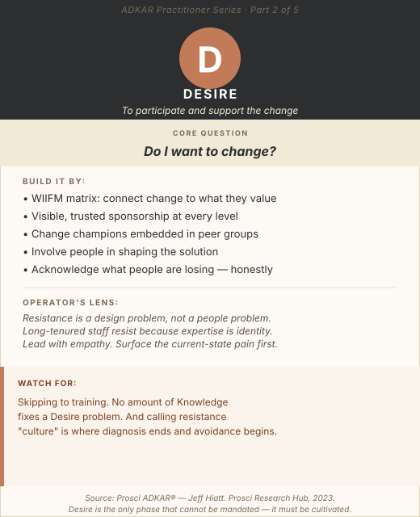

In 2018 a new executive director mandated Scrum on the team that owned our asset database and CMDB. The director we reported to didn't know Scrum and didn't believe in it, the manager running the team didn't want it, and the team had heard of it and thought poorly of it. Everyone was ready to hold the ceremonies and change nothing. The mandate had taken care of Awareness. What was missing was Desire.
I had earned my Professional Scrum Master certification two years earlier, so I volunteered as the team's Scrum Master. I told my director and the manager of the team, my peer, that if we embraced Scrum and used it the way it's meant to be used, it would add value, and if we gave it lip service to satisfy a mandate, it would be a waste of time and red tape to check a box. Then I built a slide deck that taught them what Scrum was: the ceremonies and the process, the pillars it stands on, and how that structure would protect them from whiplash while the transparency increased stakeholder awareness. Stakeholders could see what was ahead of their request and why, even when it didn't make the sprint. After I walked the leaders and the team through it, they agreed to give Scrum a genuine try instead of lip service. That was the unlock, and it was a Desire unlock.
The team was in rhythm within a few weeks, and over 10+ sprints they delivered 500+ user stories. They got excited about the structure once they felt it protecting them.
When a change program hits resistance, the instinct is to treat it as a people problem: the employees are being difficult, the managers aren't on board, the culture resists change, and the workforce needs to accept that this is happening and adapt.
That diagnosis is wrong, and it is an expensive one to get wrong. Resistance tells us something specific about where the program's design has not addressed what people care about. People who resist are usually responding rationally to a change that has not been made personally compelling to them, or to concerns nobody has addressed.
In the Desire phase of ADKAR, our job shifts from communicating facts to designing the conditions in which each person decides to support and take part in the change. Prosci puts the decision with the individual: "For people to achieve it, they must choose to make a change." Nobody can mandate that choice or train it into someone, and we can still design for it.
Foundation
What Desire Is
Prosci calls Desire "typically the most challenging ADKAR element for organizations." It is the personal commitment to support the change, and Prosci draws the line this article draws: "Organizations need personal commitment from employees to move beyond surface-level compliance. When people genuinely want to change, they invest discretionary effort and help drive success."
In practice, people who want the change troubleshoot the new process instead of reverting to the old one. They become informal advocates, and they ask "how do we make this work?" instead of "how do we get back to the way things were?"
Surface compliance looks like adoption, but it is fragile, and it tends to disappear at the first friction or the first sign that leadership's commitment is wavering. Desire lasts, and process excellence programs depend on it for the sustained behavior change they are designed to deliver.
Desire comes from three conditions:
Pain
The individual recognizes the current state as inadequate in ways that matter to them personally
Promise
The future state is compelling to them in their own role and daily work, rather than in aggregate
Trust
They believe the leadership driving the change will deliver on what they're promising
When any of the three is missing, Desire does not develop, however many training programs or communication campaigns we run.

ADKAR Practitioner Series · Part 2: Desire. Resistance is a design problem.
Diagnosis
How to Confirm a Desire Barrier Point
An Awareness problem and a Desire problem can look alike. The question that separates them: does the person understand the change and still not want it?
Desire Gap Signals
- People can explain what's changing and why, but they're not doing it
- Passive resistance: compliance in meetings, reversion to old behaviors in practice
- "It won't work here" or "we tried something like this before" dominating team conversations
- Visible informal leaders are publicly or privately skeptical
- Training attendance is strong and adoption metrics are weak
- Managers are handling the change like an administrative requirement instead of visibly sponsoring it with their teams
A useful diagnostic conversation: ask a team member directly, "What do you see as the benefit of this change for your specific work?" If they can't answer, or answer with organizational talking points and no personal conviction, you have a Desire gap.
Program Design
Eight Blueprints for Building Desire
The WIIFM Matrix (Design This First)
"What's in it for me?" is a legitimate question, the one every person asks before investing effort in something new. Prosci says it is the next question people ask once they have Awareness, and that "answering this question effectively can transform understanding into commitment." Leaving it unanswered is a failure of the program's design, and it often gets blamed on the employees' attitude.
Before designing any Desire-building intervention, build a WIIFM matrix: for each major affected population, document what the change means for their specific role. What daily frictions does it remove? What capabilities does it give them? What risks does it take away? What does it make possible for their team or career that the current state cannot?
Then document the other side: what do they stand to lose? Familiar routines, hard-won process expertise, some autonomy, and mastery of systems or tools they know well. In Prosci's research, "change in role" is the second most common reason for employee resistance. Acknowledging the losses is as important as explaining the gains, because people who feel their losses are being minimized resist more. The WIIFM matrix is the brief for all Desire-building content and conversations.
Engineering Constructive Dissatisfaction with the Status Quo
Even when things are "mostly fine," Desire can be built by making the limits of the current state visible and personal. The point is to surface the friction people already feel but haven't quantified, without attacking the way they work today.
Use data and story together. Data alone is abstract (a 12% error rate means little), and one story alone is anecdotal (one difficult case doesn't represent a systemic problem). Together they make the case: "Our rework rate costs this team about 4 hours per person per week. That is time you could spend on work that needs your expertise, instead of fixing errors a better-designed process wouldn't produce."
This works especially well in operations, where front-line employees already feel the friction of the current state. A leader who says "we see it too, and here is the data on what it's costing us" confirms what they already know, and the change becomes a fix for their problem.
The Resistance Mapping Workshop
Most change programs address resistance as it surfaces and scramble to respond. A better approach is to anticipate it before it appears.
Resistance mapping is a facilitated workshop with senior leaders and people managers, typically run 4 to 6 weeks before a major implementation. The output is a resistance map: a segmented view of the affected population, with a hypothesis about the likely source and intensity of resistance in each segment. Prosci's research lists the top reasons for employee resistance as lack of awareness of the reason for the change, change in role, fear, lack of support from and trust in management or leadership, and lack of inclusion in the change. Some segments will also resist out of concern about the design, because they see flaws the project team hasn't seen. Each source needs a different response.
The workshop gives the change team a proactive plan: targeted conversations, pilot invitations, listening sessions and segmented communications, all timed before resistance hardens into organized opposition.
Change Champion Networks
Change champions are internal advocates: peers who model the new behavior, answer questions informally, gather feedback as it comes up, and show their colleagues it's safe to be on board.
The best champions are well networked, trusted by their peers and credible, whatever their rank or performance rating, which often means informal leaders, long-tenured employees with broad relationships, or people known for calling things as they see them. A skeptic who becomes a champion does more to build Desire than an eager early adopter.
Champion network design:
- Selection: Identify by function and geography, prioritizing peer influence over hierarchical authority
- Equipping: Provide briefings on the full change picture (not the sanitized version), open Q&A sessions, and clear boundaries on what they can and cannot speak to
- Activation: Specific tasks: attending team meetings in their function to answer questions, reporting resistance themes back to the project team, modeling the new behavior visibly
- Maintenance: Regular (biweekly) champion forums to share what they're hearing and adjust the messaging
Champion networks work best when champions feel informed and empowered, and poorly when they feel used to manage resistance on leadership's behalf. Employees can tell the difference.
Personal Impact Dialogues
The most effective Desire-building conversations happen in small groups or one-on-one rather than in all-hands sessions. Personal impact dialogues are structured conversations, led by people managers, that walk individuals through how the change affects their role, workflow, career path and day-to-day experience.
A well-designed dialogue opens with acknowledgment ("I know this is a significant change for our team"), covers what's changing for their role, addresses what they stand to lose, connects the future state to what they've said they want from their work, and ends with time for their questions and a commitment to get answers to anything that can't be answered in the moment.
Run them more than once. In the 30 days before a go-live, personal dialogues of even 15 minutes each are among the most efficient Desire investments available, and they show that leadership sees the change as something happening to people as well as a project milestone.
Visible Loss Acknowledgment
One of the most underused Desire-building tools is an honest acknowledgment of what people are giving up.
Most change communication looks only forward: the new process will be better, faster, more efficient and more consistent. It rarely says, "And yes, the expertise you've spent years building in the current system is being retired. That matters, and we know it."
When change leaders state a loss explicitly ("I know this takes away the autonomy you've had in how you sequence this work, and we understand that's meaningful"), it builds a level of trust that messages about the gains cannot. What people need is to know that leadership sees their losses, rather than to be told the losses are fine. This matters most for long-tenured employees in operations, where mastery of the current process is part of their professional identity.
The Pilot Strategy as a Desire Tool
A visible, successful pilot does more to build Desire than a communication campaign because it gives people proof. When they see their peers succeeding with the new way, the "it won't work here" story loses its force. In the dispatch redesign from Part 1, the Virginia pilot was what won IT's support for the national rollout.
Choose the pilot population deliberately. Enthusiastic early adopters are an easy win and prove little, so choose a representative, credible group that includes some skeptics, because success with skeptics sends a stronger signal. Make the pilot visible, and share what went wrong along with what went right. Pilots reported as uniformly successful generate skepticism, and pilots that share what was hard and how the team addressed it build trust and Desire together.
Recognize Participation as Well as Outcomes
Recognition that celebrates adoption as well as results shows that the organization values the effort of change. It is an underused lever, because most recognition systems are designed for steady-state performance rather than the messy, uncertain middle of a change program.
Some specific recognition ideas:
- Publicly acknowledge teams that reach early adoption milestones, even before they lead on outcome metrics
- Share stories from champions and early adopters in leadership communications
- Create visible adoption boards or dashboards that celebrate progress
- Have senior sponsors recognize managers personally for teams working through the change well
Recognition during the change tells people that this matters, that their effort is seen, and that the organization is committed enough to pay attention, and that builds Desire.
The Operator's Lens
Long tenure creates identity risk. In operations, people often define their professional identity through mastery of the current processes, so a process change can feel like it is retiring the expertise that makes them valuable. Desire strategy in operations has to address identity continuity directly: which skills and knowledge transfer to the new state, and where does their expertise give them an advantage there? Clear answers to those questions can turn some of the most resistant employees into the most effective champions.
Peer influence is strongest on the floor. In operational teams, seeing respected peers adopt the change often does more than another executive message. One influential informal leader who is visibly on board can move a unit further than a month of manager cascades. Identify these people early and bring them into shaping the approach, with full information and a say in the design, so they take part in it instead of relaying messages.
Fear of consequence is a legitimate motivator, if it is used honestly. In Lean Six Sigma and operational transformation work, the consequences of the status quo are often measurable: safety incidents, customer defections, regulatory risk, cost overruns. Leaders who explain "here is what happens to this operation, and to the people in it, if we don't change" are using a legitimate Desire lever, as long as they are specific. Vague urgency ("we need to stay competitive") works less well than concrete stakes ("at our current error rate, we lose this contract in 18 months").
Common Traps
Mistakes to Avoid
Prescribing training for a Desire problem.
This is the mismatch the series opened with. Someone who lacks Desire does not lack Knowledge, and pushing training at a person who doesn't want to change reinforces the feeling of being managed rather than led.
Calling resistance "culture."
Culture is a pattern of behavior, and patterns can change. When practitioners label resistance "just the culture here," they have stopped diagnosing. Prosci's research does list organizational culture as the top reason for manager resistance, which is a reason to find out what in the culture is producing it. Resistance has a source, and the source can be addressed.
Using authority when you need influence.
"This is happening, so get on board" is a last resort. Authority produces compliance, and Desire-building produces commitment. The Scrum mandate in 2018 had everyone ready to hold the ceremonies and change nothing until the team saw what Scrum would do for them. In complex operational changes that need sustained behavior change over years, compliance is rarely enough.
Skipping the losses.
Change programs that present only the gains, and never acknowledge what people are giving up, lose credibility, and Desire depends on credibility. Earn it by telling people the full picture.
Think of the last change your team resisted. Which of the three conditions was missing: pain, promise or trust?
Source references: Prosci, The Prosci ADKAR® Model for Organizational Change Success (eBook): Desire as typically the most challenging element, surface-level compliance and discretionary effort, "What's in it for me?", top reasons for employee and manager resistance (Prosci Research Hub, 2023). Sources of Insight: "Create Desire to Drive Change." Umbrex: Prosci ADKAR Model frameworks.